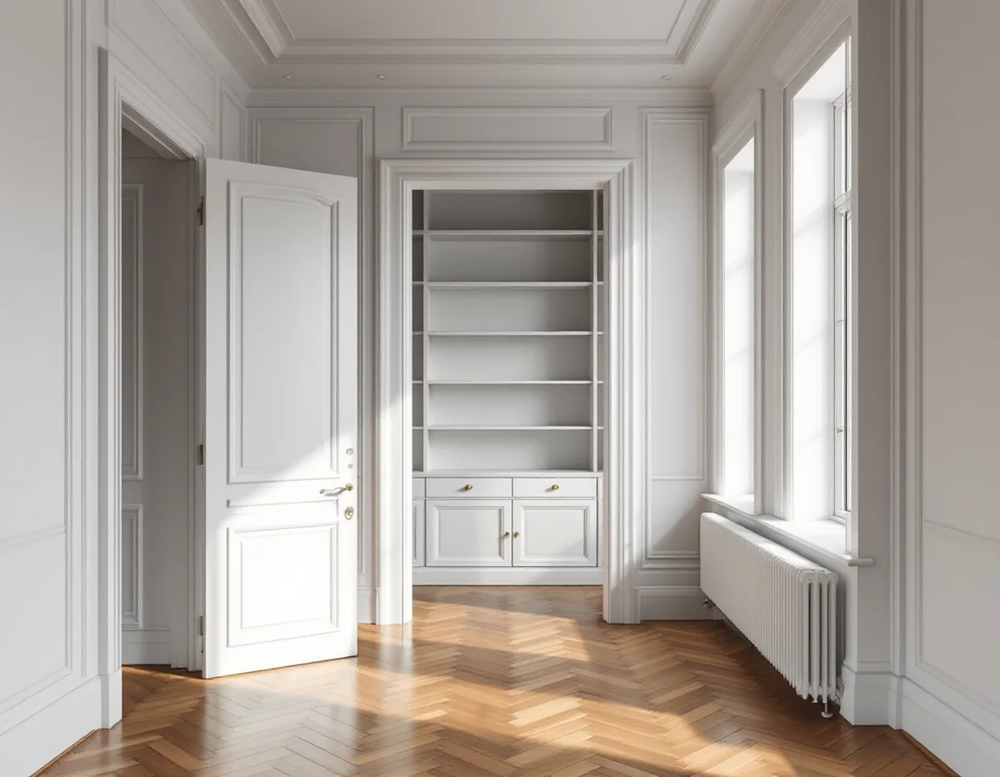
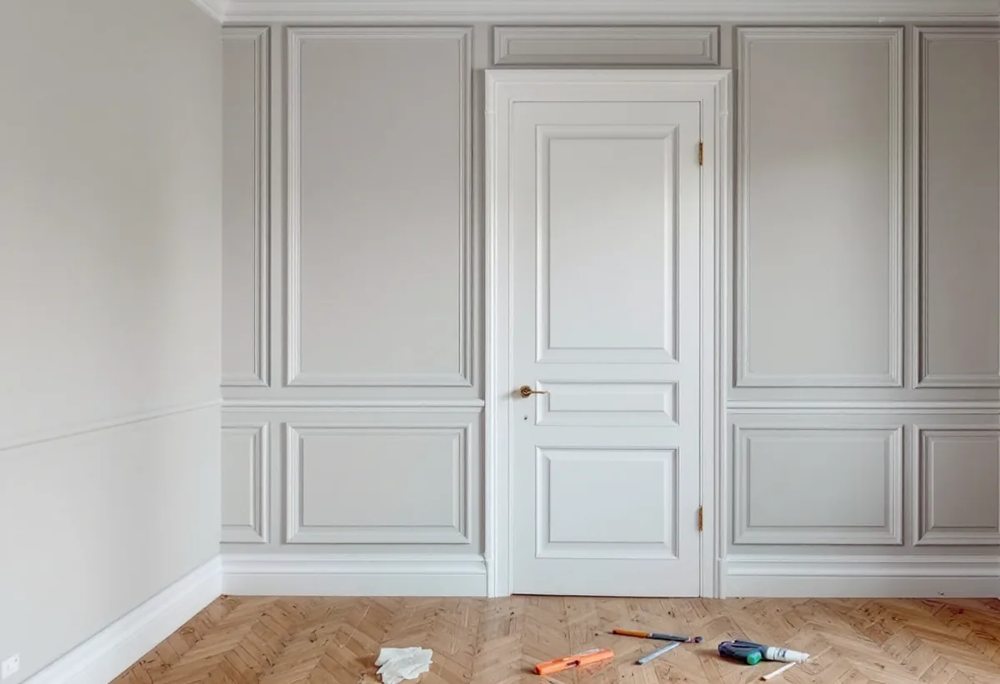

Besök och mätning
Vi mäter upp lägenheten, ser vilka väggar som kan vara bärande och noterar vilka originalsnickerier som finns kvar.
En snickare på Södermalm arbetar oftast inomhus: nya eller flyttade innerväggar, dörrar och karmar, listverk och platsbyggda garderober i lägenheter från 1880-talets hyreshus till 1930-talets lamellhus. I en bostadsrätt behövs ofta styrelsens tillstånd, och det tar vi med i planeringen från början.

Stadsmuseets byggnadsinventering av Södra Maria och del av Högalid beskriver hur Södermalm förändrades när stadsplanerna efter Albert Lindhagens kommitté fastställdes kring 1880. Då förnyades bostadsbeståndet snabbt, och det som byggdes var nästan uteslutande hyreshus. Många av de nya invånarna var arbetare, och de som inte hade råd med hyrorna i de nya husen bodde kvar i gårdshus och trähus i områdets utkanter.
På 1920-talet byggdes fortfarande slutna kvarter, men gårdarna började öppnas till så kallade storgårdskvarter, och stilen präglades av 20-talsklassicismen. På 1930-talet kom de friliggande lamellhusen på bergstomter som tidigare ansetts svåra att bebygga. Under 1920- och 1930-talen byggdes enligt inventeringen nästan bara lägenheter på ett rum och kök eller ett rum med pentry.
Inventeringen noterar också att inredningen i de flesta äldre lägenheter består av profilerade standardsnickerier, taklister i stuck och kakelugnar. För en snickare betyder det att samma uppdrag ser olika ut beroende på huset: i ett sekelskifteshus är dörrar, foder och lister värda att laga och kopiera, och en vägg som ser lätt ut kan ändå vara bärande. I en liten 30-talslägenhet handlar det oftare om att få plats med förvaring.

Enligt 7 kap. 7 § bostadsrättslagen får du inte utan styrelsens tillstånd göra ingrepp i en bärande konstruktion, ändra ledningar för avlopp, värme, gas eller vatten, ändra ventilation, eldstad eller rökkanal eller påverka brandskyddet. Samma sak gäller annan väsentlig förändring av lägenheten. Har lägenheten särskilda historiska eller kulturhistoriska värden krävs tillstånd för varje åtgärd som påverkar dem.
Styrelsen får säga nej bara om åtgärden är till påtaglig skada eller olägenhet för föreningen, och tillståndet kan förenas med villkor. Den som är missnöjd kan begära att hyresnämnden prövar frågan. Föreningens stadgar avgör dessutom vad du själv ansvarar för att underhålla, så läs dem innan du beställer.
I praktiken lönar det sig att skicka en enkel ritning och en beskrivning till styrelsen innan arbetet bokas. Vi tar fram underlaget: vilka väggar som berörs, hur de byggs och om något bärande eller brandskyddet påverkas.
En ny innervägg i en lägenhet byggs med reglar, ljudisolering och skivor och får dörr, foder och lister som matchar resten av lägenheten. Att riva en vägg som inte bär kräver enligt Boverket ingen anmälan, men påverkas de bärande delarna väsentligt ska anmälan göras och startbesked finnas innan arbetet börjar. I äldre stenhus är det därför klokt att låta en konstruktör titta på ritningarna först.
I lägenheter från sekelskiftet är listverket ofta det som binder ihop rummen. När en vägg flyttas eller en dörröppning sätts igen kompletterar vi golvlister, foder och taklister med samma profil, så att ändringen inte syns. Gamla innerdörrar går ofta att justera och renovera i stället för att bytas.
Platsbyggd förvaring är det vanligaste önskemålet: garderober i nischer, bokhyllor kring en dörr, bänkar i ett burspråk eller skåp under en sovloftstrappa. Ska samtidigt köket eller golven göras om samordnar vi det med köksrenoveringen och golvläggningen.
Ytterfönster, balkonger och fasad hör till huset, inte till lägenheten. Enligt reglerna från 1 december 2025 behövs bygglov för fasadändringar på ett flerbostadshus inom detaljplan när ändringen görs på en fasad eller ett tak som vetter mot allmän plats, till exempel en gata, ett torg eller en park, enligt Boverkets PBL kunskapsbank. Mot gården kan samma ändring vara lovfri, om inte detaljplanen eller ett särskilt värdefullt område ger utökad lovplikt, men det är föreningen som beslutar och söker.
Stadsmuseet har klassificerat bebyggelsen i innerstaden i blått, grönt och gult efter hur höga kulturhistoriska värden den har. Enligt Skönhetsrådet är grundprincipen att blå- och grönklassade byggnader remitteras till Stadsmuseet och Skönhetsrådet när bygglov söks. Rör ett arbete trapphus, entréportar eller fönster i ett sådant hus bör föreningen ta reda på husets klassning innan något beställs.
Inne i lägenheten är det annorlunda. Arbete på insidan av befintliga fönster ger enligt Skatteverket rotavdrag i bostadsrätt, men vad du själv får göra med fönstren framgår av föreningens stadgar.
Ett snickeriarbete på femte våningen utan rymlig hiss kräver planering. Skivor och virke beställs i längder som går att bära upp i trapphuset, kapning görs så långt det går inne i lägenheten och trapphuset skyddas där materialet bärs. Leveranser bokas till tider då bilen kan stå nära porten.
Enligt 7 kap. 9 § bostadsrättslagen ska du rätta dig efter de särskilda regler som föreningen meddelar. Många föreningar har regler om tider för bullrande arbeten och om var byggavfall får ställas. Vi går igenom dem med dig innan start och anpassar arbetsdagarna efter dem.
Vi mäter upp lägenheten, ser vilka väggar som kan vara bärande och noterar vilka originalsnickerier som finns kvar.
Du får en ritning och en beskrivning av arbetet att skicka till föreningen när tillstånd behövs.
Berörs något bärande tar en konstruktör fram lösningen, och anmälan lämnas till stadsbyggnadskontoret.
Leveranser, bärning och skydd av trapphuset planeras efter huset och föreningens regler.
Väggar, dörrar, listverk och förvaring byggs i en ordning som håller lägenheten så användbar som möjligt.
Vi städar, går igenom resultatet med dig och lämnar en sammanställning till dig och föreningen.
I en bostadsrätt ger enligt Skatteverket bara arbete inne i bostaden rätt till rotavdrag. Skatteverkets lista över rotarbeten nämner till exempel att riva innerväggar och ändra planlösningen, byta innerdörrar och montera platsbyggda garderober och bokhyllor. Att bygga om en balkong, glasa in den eller byta ytterdörr ger inget avdrag.
Avdraget är 30 procent av arbetskostnaden, högst 50 000 kr per person och år och högst 75 000 kr tillsammans med rut. Äger ni lägenheten tillsammans kan ni båda använda ert utrymme, och vi drar av beloppet direkt på fakturan.
Det som styr mest är om något bärande berörs, hur mycket originalsnickeri som ska lagas eller kopieras, om förvaringen ska specialbyggas och hur lätt det är att få upp material i huset. Vi kommer gärna förbi utan kostnad och lämnar sedan ett skriftligt kostnadsförslag.
Altan, väggar, dörrar och inredning.
Snickare i Stockholm →Kokvrå, gasspis och kulturvärden i lägenheten.
Köksrenovering på Södermalm →